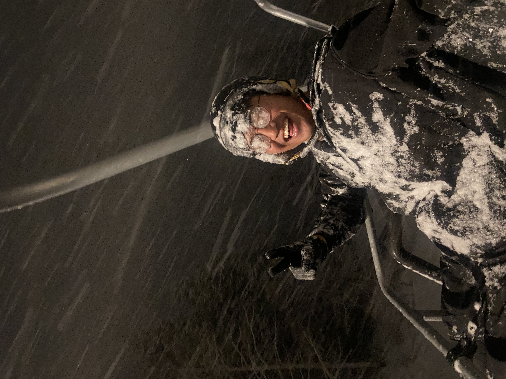
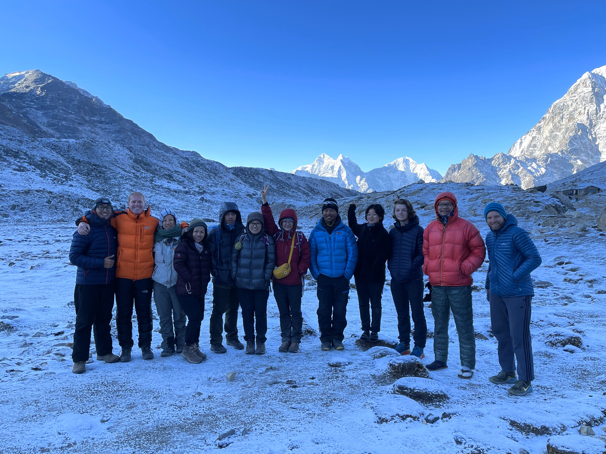
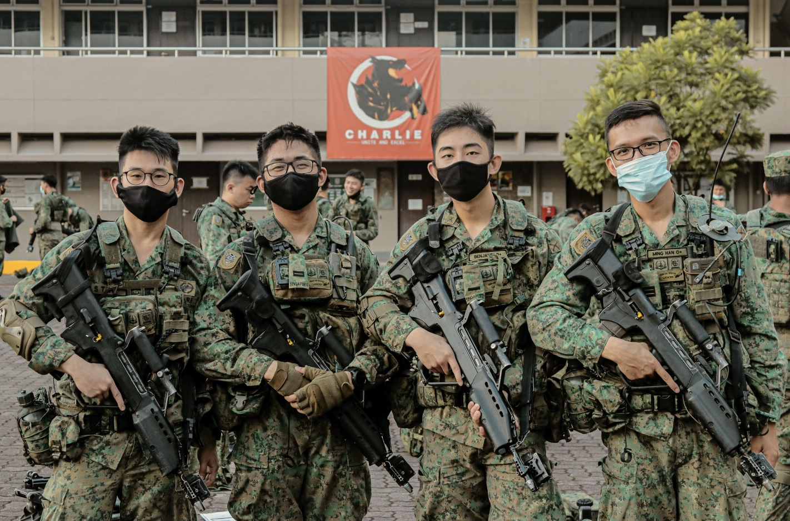
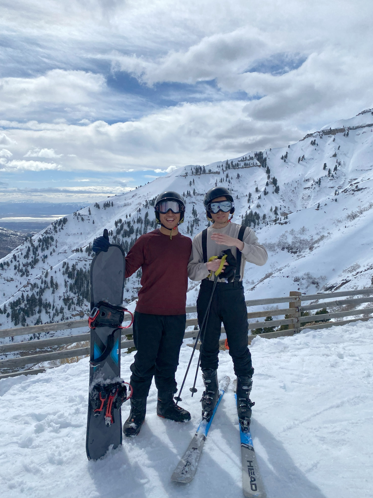

Personal Short Biography
My name is Kyle Ledesma. Having lived in many places around the world – including the Philippines, Singapore, Taiwan, Germany, and the United States – I have developed a great love for experiencing the unknown: meeting people from all walks of life, traveling to faraway places, and doing things I’ve never done before. These experiences have greatly shaped who I am.
Now, as an undergraduate student at Brigham Young University, I hope to start a business that can add value to the lives of those around me.
My Hobbies
-
Travel
Travelling is by far the number one thing I love to do. I’ve been to places like the Himalayan Mountains, the coasts of Thailand, remote islands in the Philippines, forests of central Germany, urban Taiwan, and more recently, the mountains of Utah. These experiences have made the world much smaller, and I find myself loving people from all kinds of backgrounds as I discover more and more how much we are all alike.

-
Military Service
I served for three years as an Infantry Lieutenant in the Singapore Armed Forces. This was a period of growth in every sense – physically, emotionally, and socially. I learned that nothing is given, only earned, and that there is no greater joy than knowing you have a buddy out there watching your back.

-
Spending Time Outdoors
I love enjoying the beauty of God’s creations! Scuba diving in Thailand, hiking to Everest Base Camp, bungee jumping out of a Singapore skyscraper, and more recently, snowboarding in the Utah mountains. I love getting drenched in sunlight and experiencing the thrill of being outside.
